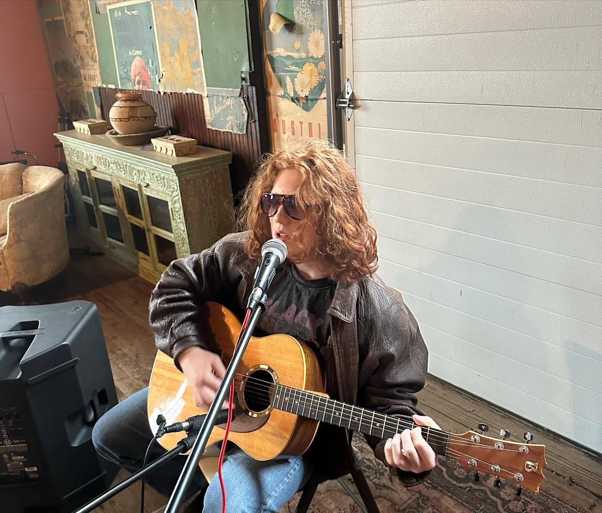

Strength Training & Lifting
Training has been one of the most consistent parts of my life for years. I enjoy the discipline, structure, and steady progression that comes with powerlifting. It keeps me grounded outside of school and projects, and it's something I take a lot of pride in.

Music
Music has been another major part of my life — from playing metal shows with friends, to performing acoustic sets around Pittsburgh, to writing my own material. It gives me a creative outlet and a way to connect with people in a completely different environment than school or work.


Playing a metal set with my band.

Playing an acoustic show — one of my favorite kinds of gigs.

Playing at home, late-night practice.